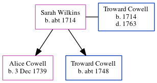

Sarah Cowell (née Wilkins) c1714 -
[ Home ] | [ Calendar ] | [ Surnames Index ] | [ Errors ] | [ Family History ]Sarah Wilkins, the wife of Troward Cowell (the six times great-uncle of Nigel Horne), was born c. 17141 and married Troward (a cheesemonger with whom she had 2 children: Alice Troward and Troward) at St Peter-upon-Cornhill Church, Cornhill, London, England on 26 Jan 17381 (Civil marriage in All Hallows, Barking, then parish marriage the next day at St Peter upon Cornhill). In 1755, she was living at Tower Street, London, England.
Children
- Alice Troward was born on 3 Dec 1739
- Troward was born c. 1748
Citations
- London and Surrey, England, Marriage Bonds and Allegations, 1597-1921 Online publication - Provo, UT, USA: Ancestry.com Operations, Inc., 2011.Original data - Marriage Bonds and Allegations. London, England: London Metropolitan Archives. Surrey Marriage Bonds and Allegations records held by the London Metropolitan Archives,
Media
Troward Cowell - Sarah Wilkins - marriage bond

Family Tree
Map
Generated by ged2site. Last updated on Jul 3, 2024
Known Issues
Date of birth is known, but not place
Residence record for 1755 contains no citation